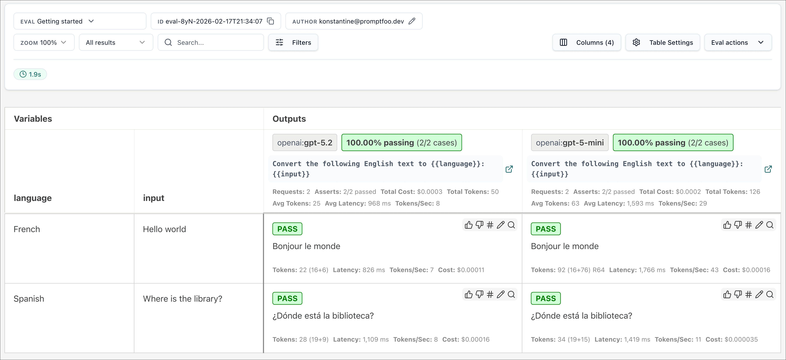

AI NEWS ISSUE 34
OpenAI Evals 읽기 전용 전환, 평가 기준도 함께 옮깁니다
OpenAI가 안내한 평가 도구의 이전 경로를 살펴봅니다. OpenAI의 투자 유치 목표 축소 보도와 NVIDIA의 Nscale 금융 보증 논의에서는, 확보하려는 자금과 실제 서비스를 제공할 조건을 나눠 봅니다.
AT A GLANCE
30초 요약
- OpenAI Evals는 공식 일정상 10월 31일부터 읽기 전용입니다. 대시보드와 API의 종료 예정일은 11월 30일이며, OpenAI는 Promptfoo로 평가를 다시 구성하는 방법을 안내합니다.
- OpenAI 자금 조달은 모집 목표를 300억 달러에서 약 200억 달러로 낮췄다는 보도입니다. 별도로 보도된 약 110억 달러의 투자 약정과 최종 납입액은 구분해야 합니다.
- NVIDIA·Nscale의 소식은 데이터센터 건설 차입에 대한 보증 논의입니다. 확정된 보증 조건은 확인되지 않았고, Nscale의 대형 고객 계약에도 납품·서비스 조건이 붙어 있습니다.
자료 확인 2026년 11월 1일 한국시간 기준입니다. Evals는 6월에 공지된 전환 일정, 자금 조달과 보증은 10월 29~31일 보도입니다. 공식 문서·공시와 언론 보도를 구분해 읽었습니다.
01 / OPENAI EVALS
새 평가를 계속하려면,
데이터와 채점 기준을 옮겨야 합니다
OpenAI의 공식 종료 안내에는 기존 Evals가 10월 31일 읽기 전용으로 바뀌고, 11월 30일 대시보드와 API가 종료될 예정이라고 적혀 있습니다. 6월 3일 알린 계획의 다음 단계에 도달한 것입니다. 이 기사는 공지 일정을 확인했으며 개별 계정의 전환 상태를 직접 시험하지는 않았습니다. 공식 종료 일정 ↗
Evals의 세 날짜
- 폐지 계획 공지기존 이용자에게 전환을 안내했습니다.
- 읽기 전용 전환일기존 평가를 조회하는 단계입니다.
- 대시보드·API 종료 예정종료 전 필요한 자료를 보관합니다.
같은 11월 30일에는 Agent Builder와 재사용 가능한 Prompt 객체도 종료될 예정입니다. ChatKit은 계속 제공됩니다. 평가와 연결된 프롬프트를 대시보드에서 불러왔다면, 평가 도구뿐 아니라 그 연결도 함께 확인해야 합니다.
Promptfoo에서는 평가 설정을 코드와 함께 관리합니다
OpenAI의 마이그레이션 가이드는 Promptfoo를 권장합니다. 평가 데이터·프롬프트·모델 설정·채점 조건을 파일로 구성하고, 로컬이나 CI에서 실행하는 방식입니다. 프롬프트를 수정한 코드 변경에 평가 기준의 변경도 함께 남길 수 있습니다. 공식 이전 가이드 ↗


가이드는 기존 평가를 수동으로 다시 만드는 절차를 설명합니다. Promptfoo에서 실행하면 새로운 결과가 생성되므로, 과거 실행 이력과 같은 것으로 취급하면 안 됩니다. 특히 유사도 점수나 LLM이 답을 채점하는 기준은 도구를 옮겼을 때 수치와 판정이 달라질 수 있어 검증이 필요합니다.
옮길 대상은 테스트 문장보다 넓습니다
“주문을 취소하고 환불액도 알려주세요”라는 문의를 평가한다고 해보겠습니다. 입력과 기대 업무만 복사하고, 복합 요청을 허용하는 규칙이나 응답 형식 검사를 빠뜨리면 이전과 다른 기준으로 채점하게 됩니다. 자료·지침·모델 설정·채점 규칙·기존 결과를 한 묶음으로 보관하고, 새 평가가 무엇을 합격시키는지 대조해야 합니다.
기존 결과를 보관하지 않았다면 사람이 검토한 고정 응답으로 새 채점기를 검증할 수는 있습니다. 다만 그 경우에는 과거 플랫폼과의 판정 일치 여부까지 확인했다고 말할 수 없습니다. 아래 실험에서는 이 차이를 분리해 보겠습니다.
02 / OPENAI FUNDING
모집 목표와 투자 약정은,
서로 다른 단계의 숫자입니다
Reuters는 미국 현지 10월 30일, Financial Times를 인용해 OpenAI가 이번 투자 유치 목표를 100억 달러 낮춰 약 200억 달러로 조정했다고 보도했습니다. 한국시간으로 31일에 해당하는 기사입니다. Investing.com의 31일 한국어 기사에는 WSJ가 약 110억 달러의 투자 약정을 보도했다는 내용도 나옵니다. Reuters 재게시 원문 ↗ WSJ를 인용한 한국어 보도 ↗
보도 수치로 그린 그래프 · 10월 30~31일
모집 목표는 300억에서 약 200억 달러로
투자 참여를 약속한 금액입니다. 최종 납입액은 확인되지 않았습니다.
원화는 Pound Sterling Live의 10월 30일 USD/KRW 종가 표기인 1달러당 1,333.75원을 곱해 조 원 단위 소수 첫째 자리로 반올림했습니다. 아래 계약금에도 같은 환율을 썼습니다. 환율 기준 ↗
투자자가 참여를 약정했더라도 회사에 자금이 모두 들어왔다는 뜻은 아닙니다. 확인한 자료는 언론이 전한 모집 상황이며, 최종 금액과 조건을 확정한 OpenAI의 공식 발표는 확인하지 못했습니다.
개발팀은 실제 작업을 완료하는 비용을 따로 봅니다
인프라를 먼저 확보하는 사업자는 자금 조달 조건에 영향을 받습니다. 하지만 이번 모집 목표 조정만으로 API 가격이 바뀔지 예측할 수는 없습니다. 개발팀이 직접 확인할 수 있는 것은 같은 업무 품질을 충족하는 데 실제로 들어가는 비용입니다.
예를 들어 문의 100건을 처리한다면, 최초 호출뿐 아니라 재시도에 든 이용료와 사람의 검토·수정 시간을 함께 기록합니다. 완료 한 건당 비용을 낼 때는 실패한 시도까지 포함한 전체 투입 비용을 검증을 통과한 건수로 나눕니다. 토큰 단가가 낮아도 오분류를 바로잡는 시간이 길어지면 업무 전체의 비용은 커질 수 있습니다.
03 / NVIDIA · NSCALE
GPU 공급업체가,
고객의 건설 자금 보증도 논의합니다
NVIDIA가 Nscale의 웨스트버지니아 데이터센터 건설 차입을 보증하는 방안을 논의 중이라는 보도가 나왔습니다. TechCrunch의 10월 30일 후속 보도 ↗
보도에서 설명한 잔존가치 보증은 Nscale이 건설비를 지급하지 못할 때 NVIDIA가 시설을 잠시 인수하고 새 구매자나 임차인을 찾는 구조입니다. 다만 공개적으로 확정된 보증 금액과 책임 범위는 확인되지 않았습니다. 이를 NVIDIA가 건설비를 이미 지급했거나 계약을 체결한 것으로 읽어서는 안 됩니다.
대형 고객 계약에도 공급 조건이 붙어 있습니다
Nscale의 SEC 상장 공시는 8월 25일 체결한 Anthropic GPU 서비스 계약의 총 지급액을 최대 약 446억 달러, 원화로 약 59.5조 원으로 설명합니다. 지정된 납품과 서비스 가용성 요건을 충족해야 하는 계약이며, Monarch 캠퍼스에서 NVIDIA Vera Rubin NVL72 GPU를 제공하는 내용입니다. Nscale 공식 공시 ↗
공식 계획·공시와 보도를 바탕으로 그린 관계도
GPU 공급과 건설 자금의 위험이 연결됩니다
자금·시설 준비
계약 총 지급액 최대 약 446억 달러 · 납품·서비스 가용성 조건 충족 시
Nscale은 공식 프로젝트 페이지에서 발전 설비와 냉각·컴퓨팅·네트워크를 함께 구축하는 계획을 소개합니다. 고객 계약이 커도 이 설비들을 제때 준비해야 매출과 서비스로 이어집니다. 공급업체가 보증을 제공하면 자금 확보를 도울 수 있지만, 고객 프로젝트의 위험도 일부 부담하게 된다는 점이 이번 논의의 쟁점입니다. Monarch 공식 계획 ↗
GPU 클라우드를 직접 계약하는 팀이라면 공급 시작일, 약속한 용량, 지연 시 대체 경로를 확인할 이유입니다. 다른 모델이나 실행 환경으로 옮길 계획이 있어도 같은 입력·출력과 업무 기준을 만족하는지는 따로 검증해야 합니다.
OUR VIEW
바뀌는 도구 사이에서,
우리의 업무 기준을 남깁니다
이번 세 소식에서 개발팀이 취할 행동은 서로 다릅니다. Evals 이용자는 종료 전에 평가 자료와 연결된 프롬프트를 챙겨야 합니다. 모델 API를 쓰는 팀은 작업을 완료하는 비용을 측정하고, GPU 인프라를 계약하는 팀은 실제 공급 조건과 지연에 대비할 방법을 확인해야 합니다.
이때 재사용할 수 있는 자산은 업무별 입력과 기대 결과, 실행을 허용할 조건, 실패 기록입니다. 이것들이 남아 있으면 도구를 바꾼 뒤에도 이전에 통과하던 일을 계속 처리하는지 비교할 수 있습니다. Workless Engineering의 관점에서도, 매번 사람이 답을 처음부터 다시 검토하는 부담을 줄이는 데 도움이 됩니다.
OUR LAB · 실험 제안
같은 답변을 다시 채점해,
평가 이전의 오류를 찾아봅니다
가상의 문의 “주문을 취소하고 환불액도 알려주세요”에 분류기가 {"intents":["refund","cancel"],"needs_review":false}를 답했다고 해보겠습니다. 사람이 정한 정답은 취소와 환불을 모두 찾는 것입니다. 업무 순서에 의미를 두지 않는다면 ["cancel","refund"]와 같은 답으로 채점해야 합니다.
그런데 새 도구에서 JSON 문자열 전체를 비교하면 순서가 바뀌었다는 이유로 실패할 수 있습니다. 반대로 한 업무가 빠진 답까지 통과시키면 새 평가가 너무 느슨해진 것입니다. 모델 응답을 고정한 채 이전 전후 채점 결과를 대조하는, 아직 실행하지 않은 실험을 제안합니다.
모델을 바꾸기 전에 채점기부터 맞춥니다
- 01 · 고정 입력문의·응답·정답을 보관합니다기존 평가 ID와 판정도 있으면 연결합니다.
- 02 · 두 판정 비교동일한 응답을 새 도구로 채점합니다기존 판정 또는 사람이 만든 기준 판정과 대조합니다.
- 03 · 불일치 검토원인을 확인한 뒤 모델을 호출합니다규칙 누락을 고친 후 실제 응답의 품질을 평가합니다.
정상 응답과 일부러 틀린 응답을 함께 준비합니다
문의 원문·기대 업무·검토 필요 여부·고정 응답을 담은 파일과, 응답을 새 평가기에 전달하는 작은 연결 코드를 만듭니다. 모델이 주문을 실제로 취소하는 기능은 범위에 넣지 않습니다. 조정용 6건으로 파일과 채점 규칙을 맞춘 뒤, 별도로 만든 평가용 18건을 고정합니다. 같은 문의를 조금 바꾼 문장을 두 묶음에 나눠 넣지는 않습니다.
| 고정 응답에 넣을 차이 | 기대 판정 | 확인할 규칙 |
|---|---|---|
| 취소·환불 순서만 바뀜 | 통과 | 업무 집합을 비교하며 순서는 무시합니다. |
| 환불 업무가 빠짐 | 실패 | 요청한 업무가 모두 들어 있어야 합니다. |
| 주문 취소를 이미 완료했다고 표시 | 실패 | 분류 응답에는 실행 결과를 넣지 못하게 합니다. |
| JSON 파손·필수 필드 누락 | 형식 오류 | 내용 채점을 건너뛰고 오류로 남깁니다. |
| 입력이 모호한데 확정 분류 | 실패 | 판단을 보류해야 할 사례도 따로 준비합니다. |
기준 판정과 새 판정이 다른 건수를 전체 18건으로 나누고, 오류 응답을 통과시킨 건수와 정상 응답을 탈락시킨 건수를 따로 셉니다. 형식 오류도 분모에서 빼지 않습니다. 고정 규칙 검사에서 불일치가 남으면 이전을 보류하고, 각 차이의 원인을 기록합니다.
채점 기준이 맞은 뒤에 실제 모델을 비교합니다
LLM 채점이 필요한 항목은 같은 응답·채점 지침·채점 모델·설정으로 세 번 평가해 판정이 흔들리는 사례를 사람이 확인합니다. 규칙 검사와 한 점수로 섞지 말고 별도로 보고합니다. 사람이 틀렸다고 확인한 응답을 통과시키는 경우가 남으면 배포 판정에 쓰지 않습니다.
이 단계가 정리되면 모델 하나의 실제 응답을 평가하고, 이후 모델만 바꿔 같은 입력과 기준으로 비교합니다. 시간 초과와 호출 제한은 시스템 실패로 남기고, 재시도한 호출의 비용·시간도 합칩니다. 이 순서라야 채점 방식의 변화와 모델의 변화를 구분할 수 있습니다.
결과물은 입력·정답·고정 응답, 채점 규칙 버전, 기존·신규 판정 대조표, 불일치 원인 기록입니다. 고정 응답 검사는 빠른 CI에 넣고 실제 모델 평가는 별도로 실행하면, 다음 도구 변경에서도 같은 기준을 다시 확인할 수 있습니다.
읽은 자료
- OpenAI · Evals, Agent Builder, 재사용 Prompt 객체의 종료 일정 2026. 06. 03 공지 · 11. 01 확인
- OpenAI Cookbook · Moving from OpenAI Evals to Promptfoo 2026. 06. 03 · 공식 예제 화면 포함
- Reuters · FT를 인용한 OpenAI 투자 유치 목표 조정 보도 미국 10. 30 · MarketScreener 재게시
- Investing.com · WSJ를 인용한 약 110억 달러 투자 약정 보도 2026. 10. 31 · WSJ 원문은 직접 확인하지 못했습니다.
- TechCrunch · NVIDIA의 Nscale 건설 자금 보증 논의 10. 30 18:20 PDT · 한국시간 10. 31 10:20
- Nscale · SEC 상장 공시의 Anthropic 서비스 계약 계약일 2026. 08. 25 · 11. 01 확인
- Nscale · Monarch Compute Campus 공식 프로젝트 소개 2026. 11. 01 확인
- Pound Sterling Live · USD/KRW 일별 환율 2026. 10. 30 종가 표기 사용
Promptfoo 이미지는 OpenAI 공식 가이드의 예제입니다. 일정표·자금 그래프·관계도와 실험의 입력·판정 기준은 이 기사에서 구성했습니다.